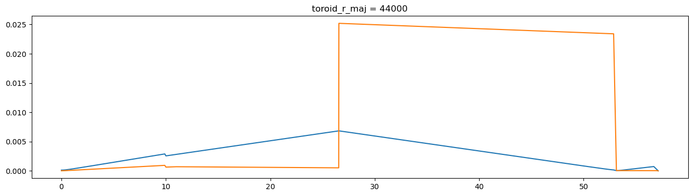

Optical Elements as Ophyd Objects¶
This section is based on the TES beamline example.
Hint: See the List of predefined simulations in Sirepo for examples of identifiers for different beamlines.
Run “Beamline” SRW simulations¶
In this example, we scan the horizontal size of the aperture and collect the resulting averaged intensities and corresponding 2D intensity distributions from the “Watchpoint” report on the “Beamline” page of Sirepo/SRW app.
Start ipython and run the following where sim_id is the UID for the simulation we are working with:
[1]:
%run -i ../../../examples/prepare_det_env.py
from sirepo_bluesky.sirepo_bluesky import SirepoBluesky
from sirepo_bluesky.sirepo_ophyd import create_classes
connection = SirepoBluesky("http://localhost:8000")
data, schema = connection.auth("srw", "00000002")
classes, objects = create_classes(connection.data,
connection=connection)
globals().update(**objects)
aperture.horizontalSize.kind = "hinted"
w9.duration.kind = "hinted"
(uid,) = RE(bp.scan([w9], aperture.horizontalSize, 0, 2, 5))
hdr = db[uid]
tbl = hdr.table(fill=True)
print(tbl)
w9_image = np.array(list(hdr.data("w9_image")))
Transient Scan ID: 1 Time: 2022-09-21 22:22:30
Persistent Unique Scan ID: '00652bec-f830-4cf0-b7a4-429d22e9789a'
New stream: 'primary'
+-----------+------------+-------------------------+-------------+------------+
| seq_num | time | aperture_horizontalSize | w9_duration | w9_mean |
+-----------+------------+-------------------------+-------------+------------+
| 1 | 22:23:08.7 | 0.000 | 37.209 | 0.000 |
| 2 | 22:23:39.9 | 0.500 | 30.890 | 2510544190625.287 |
| 3 | 22:24:10.9 | 1.000 | 30.860 | 41560782559219.422 |
| 4 | 22:24:42.0 | 1.500 | 30.905 | 136793792948293.203 |
| 5 | 22:25:13.2 | 2.000 | 30.892 | 346875726031568.125 |
+-----------+------------+-------------------------+-------------+------------+
generator scan ['00652bec'] (scan num: 1)
time \
seq_num
1 2022-09-21 22:23:08.778681278
2 2022-09-21 22:23:39.908257723
3 2022-09-21 22:24:10.976780891
4 2022-09-21 22:24:42.090266705
5 2022-09-21 22:25:13.206377983
w9_sirepo_data_json \
seq_num
1 {"models": {"arbitraryMagField": {"interpolati...
2 {"models": {"arbitraryMagField": {"interpolati...
3 {"models": {"arbitraryMagField": {"interpolati...
4 {"models": {"arbitraryMagField": {"interpolati...
5 {"models": {"arbitraryMagField": {"interpolati...
w9_sirepo_data_hash w9_duration \
seq_num
1 3550f41b892a5b05f6a30ce7ec1a67b3ae9e35e4dc210c... 37.209394
2 683b7b2ebbaf40bcf10b97cfcc4efdfbd4d55c42c6667b... 30.889780
3 8b8d18d1c1813309041f01b6d7c0fd59a772b4bfc74657... 30.860062
4 5916696059c347c873037401442568e2cd411eee0c0160... 30.904830
5 88b52e910b0fe6b4cc4973d2ca5ace9d302697ec2324b4... 30.891631
w9_image w9_shape \
seq_num
1 [[0.0, 0.0, 0.0, 0.0, 0.0, 0.0, 0.0, 0.0, 0.0,... [42, 960]
2 [[926.6341552734375, 935.7051391601562, 954.32... [42, 960]
3 [[1142696.125, 1127239.25, 1114390.125, 116813... [42, 960]
4 [[114820112.0, 116992512.0, 116708392.0, 11891... [42, 960]
5 [[980582272.0, 1007160704.0, 1032941312.0, 103... [42, 960]
w9_mean w9_photon_energy \
seq_num
1 0.000000e+00 2500.0
2 2.510544e+12 2500.0
3 4.156078e+13 2500.0
4 1.367938e+14 2500.0
5 3.468757e+14 2500.0
w9_horizontal_extent \
seq_num
1 [-2.1254114436366436e-06, -9.098470371627117e-07]
2 [-0.0002015893619838878, 0.00019947725636508496]
3 [-6.523977670846958e-05, 6.234960530300249e-05]
4 [-3.183281321719476e-05, 2.883299625123156e-05]
5 [-1.880166551489609e-05, 1.5761422719808468e-05]
w9_vertical_extent w9_id w9_title \
seq_num
1 [-6.735306985152392e-07, 6.90416995865796e-07] 15 W9
2 [-1.789280408182185e-05, 1.7455179846077244e-05] 15 W9
3 [-1.747167489540234e-05, 1.7044350685160325e-05] 15 W9
4 [-1.680649675386221e-05, 1.639544154620327e-05] 15 W9
5 [-1.556056188360331e-05, 1.5179979892601324e-05] 15 W9
w9_type w9_element_position aperture_horizontalSize
seq_num
1 watch 57.142 0.0
2 watch 57.142 0.5
3 watch 57.142 1.0
4 watch 57.142 1.5
5 watch 57.142 2.0

[2]:
from mpl_toolkits.axes_grid1 import ImageGrid
print(f"Data shape: {w9_image.shape}")
num_frames = w9_image.shape[0]
ncols = 2
nrows = int(np.ceil(num_frames / ncols))
fig = plt.figure()
grid = ImageGrid(fig, (1, 2, ncols, nrows),
nrows_ncols=(nrows, ncols),
axes_pad=0.5,
aspect=False)
for ax, im in zip(grid, w9_image[:, ...]):
ax.imshow(im, aspect="auto")
Data shape: (5, 42, 960)

Run “Beam Statistics” Sirepo/Shadow app simulations¶
In this example, we scan the toroidal mirror’s radius and collect the results of the “Beam Statistics” report on the “Beamline” page of Sirepo/Shadow app. At the end of the execution, we provide the timing report for these simulations.
[3]:
%run -i ../../../examples/prepare_det_env.py
from sirepo_bluesky.sirepo_bluesky import SirepoBluesky
from sirepo_bluesky.sirepo_ophyd import BeamStatisticsReport, create_classes
connection = SirepoBluesky("http://localhost:8000")
data, schema = connection.auth("shadow", "00000002")
classes, objects = create_classes(connection.data,
connection=connection)
globals().update(**objects)
bsr = BeamStatisticsReport(name="bsr", connection=connection)
toroid.r_maj.kind = "hinted"
bsr.duration.kind = "hinted"
scan_range = (10_000, 50_000, 21)
(uid,) = RE(bp.scan([bsr], toroid.r_maj, *scan_range))
hdr = db[uid]
tbl = hdr.table()
print(tbl)
Transient Scan ID: 1 Time: 2022-09-21 22:25:15
Persistent Unique Scan ID: '07a9f6b9-a3f0-485c-b2d1-ca7f3228826f'
New stream: 'primary'
+-----------+------------+--------------+--------------+
| seq_num | time | toroid_r_maj | bsr_duration |
+-----------+------------+--------------+--------------+
| 1 | 22:25:23.1 | 10000.000 | 7.263 |
| 2 | 22:25:28.3 | 12000.000 | 5.175 |
| 3 | 22:25:33.6 | 14000.000 | 5.183 |
| 4 | 22:25:38.9 | 16000.000 | 5.203 |
| 5 | 22:25:44.2 | 18000.000 | 5.194 |
| 6 | 22:25:49.4 | 20000.000 | 5.181 |
| 7 | 22:25:54.6 | 22000.000 | 5.168 |
| 8 | 22:25:59.9 | 24000.000 | 5.177 |
| 9 | 22:26:05.2 | 26000.000 | 5.195 |
| 10 | 22:26:10.5 | 28000.000 | 5.195 |
| 11 | 22:26:15.8 | 30000.000 | 5.209 |
| 12 | 22:26:21.1 | 32000.000 | 5.212 |
| 13 | 22:26:26.4 | 34000.000 | 5.205 |
| 14 | 22:26:31.7 | 36000.000 | 5.189 |
| 15 | 22:26:36.9 | 38000.000 | 5.214 |
| 16 | 22:26:42.2 | 40000.000 | 5.181 |
| 17 | 22:26:47.5 | 42000.000 | 5.184 |
| 18 | 22:26:52.8 | 44000.000 | 5.211 |
| 19 | 22:26:58.1 | 46000.000 | 5.202 |
| 20 | 22:27:03.4 | 48000.000 | 5.221 |
| 21 | 22:27:08.6 | 50000.000 | 5.169 |
+-----------+------------+--------------+--------------+
generator scan ['07a9f6b9'] (scan num: 1)
time \
seq_num
1 2022-09-21 22:25:23.100275517
2 2022-09-21 22:25:28.375123739
3 2022-09-21 22:25:33.636378050
4 2022-09-21 22:25:38.922441483
5 2022-09-21 22:25:44.200612783
6 2022-09-21 22:25:49.455703974
7 2022-09-21 22:25:54.699031830
8 2022-09-21 22:25:59.954066753
9 2022-09-21 22:26:05.255366087
10 2022-09-21 22:26:10.537406445
11 2022-09-21 22:26:15.830903769
12 2022-09-21 22:26:21.139320135
13 2022-09-21 22:26:26.426805258
14 2022-09-21 22:26:31.702326775
15 2022-09-21 22:26:36.999870777
16 2022-09-21 22:26:42.268556595
17 2022-09-21 22:26:47.538656712
18 2022-09-21 22:26:52.835089445
19 2022-09-21 22:26:58.129775524
20 2022-09-21 22:27:03.439730644
21 2022-09-21 22:27:08.687968016
bsr_sirepo_data_json \
seq_num
1 {"models": {"beamStatisticsReport": {"driftDiv...
2 {"models": {"beamStatisticsReport": {"driftDiv...
3 {"models": {"beamStatisticsReport": {"driftDiv...
4 {"models": {"beamStatisticsReport": {"driftDiv...
5 {"models": {"beamStatisticsReport": {"driftDiv...
6 {"models": {"beamStatisticsReport": {"driftDiv...
7 {"models": {"beamStatisticsReport": {"driftDiv...
8 {"models": {"beamStatisticsReport": {"driftDiv...
9 {"models": {"beamStatisticsReport": {"driftDiv...
10 {"models": {"beamStatisticsReport": {"driftDiv...
11 {"models": {"beamStatisticsReport": {"driftDiv...
12 {"models": {"beamStatisticsReport": {"driftDiv...
13 {"models": {"beamStatisticsReport": {"driftDiv...
14 {"models": {"beamStatisticsReport": {"driftDiv...
15 {"models": {"beamStatisticsReport": {"driftDiv...
16 {"models": {"beamStatisticsReport": {"driftDiv...
17 {"models": {"beamStatisticsReport": {"driftDiv...
18 {"models": {"beamStatisticsReport": {"driftDiv...
19 {"models": {"beamStatisticsReport": {"driftDiv...
20 {"models": {"beamStatisticsReport": {"driftDiv...
21 {"models": {"beamStatisticsReport": {"driftDiv...
bsr_sirepo_data_hash bsr_duration \
seq_num
1 eed2ef02773143e8e5114a7c47769bed26fc25b7b70403... 7.262584
2 dae2ae7ec90d2975b41ae1f8a903b960d2249829a8aba2... 5.175090
3 d4d6cf1821924ec9559bbaaa36f148d738027e8c1cc540... 5.182830
4 af0ec523449250e0dc9f59f1a3acbe60467a497513b122... 5.203178
5 e17dbaddb3e478e3cdcb8d7628e1cc1b351c735428b08b... 5.194251
6 afdaa0891e835ab0fa4c1c02a584d67c362e618814c10d... 5.181380
7 d187568b5f0a247f53fa4b0eba5a57c2824107b0af96ea... 5.168058
8 933664d83cceb561df5830c28bbc3375b1121a7e4636fd... 5.177306
9 b0e0a3d5e8f91e10e4f67af4e93e616576ceb3d75c0600... 5.194786
10 e7a315b1e54aedb209a8af9a6fcead5ff15a4fc89208e5... 5.195379
11 43ef34a0afc8e3e74ef569c8b6b050eaf0edbdb870b14d... 5.209422
12 52bb25518fde8b3ea26b1ec46ad094b1fc7f3e1086d985... 5.212193
13 02ba821fb6ac15b1ac49ed240524b8b6e035ae7e515b6f... 5.204893
14 9be68f0bf9ee382e7a491c973c8bf049bed4e21881ccef... 5.188726
15 a9b5464fb9c89685fa3b94471eb8b3b354e2c065f35037... 5.214299
16 6c3370b4ff91a1c4cb3decb7dc6059587665642e5d9be7... 5.181496
17 93830c05f2dede48263a53f736faa73ff2f2c8d0bbefd6... 5.184118
18 92846501d7a61f55c161971b90c4781095b282240adf49... 5.211050
19 d89d0fec2380d6eb3d5cde625cbb5b174dca46667b23aa... 5.202174
20 f821fb1bd733dca959e21d2fa1a5f5efd42a6369b51344... 5.220956
21 7b45f66d96a404aa6a6e8dbd7b8605d0feb49cd3c57ffd... 5.168904
bsr_report toroid_r_maj
seq_num
1 {"angxpzp": [0.0, -1.7793448589854113e-20, -3.... 10000.0
2 {"angxpzp": [0.0, -1.7793448589854113e-20, -3.... 12000.0
3 {"angxpzp": [0.0, -1.7793448589854113e-20, -3.... 14000.0
4 {"angxpzp": [0.0, -1.7793448589854113e-20, -3.... 16000.0
5 {"angxpzp": [0.0, -1.7793448589854113e-20, -3.... 18000.0
6 {"angxpzp": [0.0, -1.7793448589854113e-20, -3.... 20000.0
7 {"angxpzp": [0.0, -1.7793448589854113e-20, -3.... 22000.0
8 {"angxpzp": [0.0, -1.7793448589854113e-20, -3.... 24000.0
9 {"angxpzp": [0.0, -1.7793448589854113e-20, -3.... 26000.0
10 {"angxpzp": [0.0, -1.7793448589854113e-20, -3.... 28000.0
11 {"angxpzp": [0.0, -1.7793448589854113e-20, -3.... 30000.0
12 {"angxpzp": [0.0, -1.7793448589854113e-20, -3.... 32000.0
13 {"angxpzp": [0.0, -1.7793448589854113e-20, -3.... 34000.0
14 {"angxpzp": [0.0, -1.7793448589854113e-20, -3.... 36000.0
15 {"angxpzp": [0.0, -1.7793448589854113e-20, -3.... 38000.0
16 {"angxpzp": [0.0, -1.7793448589854113e-20, -3.... 40000.0
17 {"angxpzp": [0.0, -1.7793448589854113e-20, -3.... 42000.0
18 {"angxpzp": [0.0, -1.7793448589854113e-20, -3.... 44000.0
19 {"angxpzp": [0.0, -1.7793448589854113e-20, -3.... 46000.0
20 {"angxpzp": [0.0, -1.7793448589854113e-20, -3.... 48000.0
21 {"angxpzp": [0.0, -1.7793448589854113e-20, -3.... 50000.0

[4]:
import json
import matplotlib.pyplot as plt
for idx in range(1, tbl["toroid_r_maj"].size + 1):
d = json.loads(tbl["bsr_report"][idx])
plt.figure(figsize=(16, 4))
plt.plot(d["s"], d["sigmax"])
plt.plot(d["s"], d["sigmaz"])
plt.title(f"toroid_r_maj = {tbl['toroid_r_maj'][idx]:.0f}")
/tmp/ipykernel_5733/1375322784.py:6: RuntimeWarning: More than 20 figures have been opened. Figures created through the pyplot interface (`matplotlib.pyplot.figure`) are retained until explicitly closed and may consume too much memory. (To control this warning, see the rcParam `figure.max_open_warning`). Consider using `matplotlib.pyplot.close()`.
plt.figure(figsize=(16, 4))




[5]:
data = np.array(tbl["time"].diff(), dtype=float)[1:] / 1e9
fig = plt.figure()
ax = fig.add_subplot()
ax.plot(np.linspace(*scan_range)[1:], data, label="Duration of simulations")
ax.set_ylabel("Duration of simulations [s]")
ax.set_xlabel("Torus Major Radius [m]")
ax.axhline(data.mean(), color="k", label="Averaged duration")
ax.legend()
title = (
f"Shadow TES simulation\n"
f"RE(bp.scan([bsr], toroid.r_maj, "
f"{', '.join([str(x) for x in scan_range])}))"
)
ax.set_title(title)
plt.show()